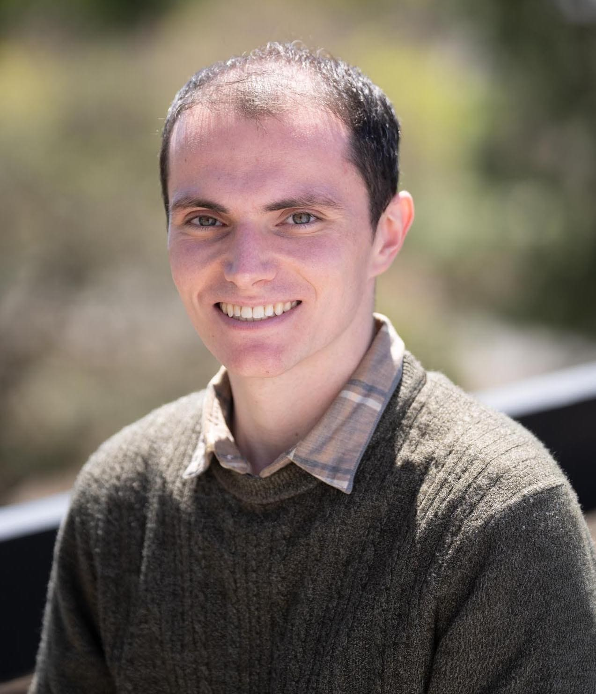

|  |
Scott EmmonsI am a PhD student in the Department of Electrical Engineering and Computer Sciences at the University of California, Berkeley. Advised by Stuart Russell, I work with the Center for Human-Compatible AI to help ensure that increasingly powerful artificial intelligence systems are robustly beneficial. I am grateful for the support of a Department of Energy Computational Science Graduate Fellowship. I previously cofounded far.ai, a 501(c)3 research nonprofit. FAR incubates and accelerates beneficial AI research agendas. scott at scottemmons dot com |